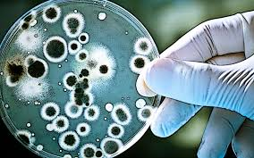

What is Biotech?
Very basically, biotechnology is the process of using biological processes to our benefit. This includes things like antibiotics, hormones, genetic modification - in short, it’s a very broad category. [encyclopedia britannica entry for biotech] It’s also a very old category, having been used in some form for as long as 10 000 years, starting in early agrarian communities, primarily in fermentation for food products like bread, beer, cheese, and vinegar. [encyclopedia britannica entry for biotech] However, the cultural conception of the word “biotechnology” is very different from the true definition, and that’s what I’m mostly going to focus on, since that’s where ethical issues begin to arise. The cultural idea of biotechnology emerged in the 1960s and ‘70s, encompassing a series of newer methods and strategies that were beginning to see use at the time, such as the use of recombinant DNA proteins and monoclonal antibodies.[Evans et al. - The Evolution of Biotechnology and its Impact on Health Care] This field has evolved rapidly over time, growing to encompass a whole range of techniques, treatments, and technologies which continue to be used and developed today.
Why does this matter?
Biotechnology is a rapidly growing industry, and has implications that reach deep into the fabric of our lives. Into how we live and care for each other, through healthcare; into how and what we eat, through agriculture; and even into how we interact with technology and the world around us, through bioinformatics. [Biotechnology Market Size & Growth Trends Report, 2030] Given this wide reach, this is also an industry that requires quite a lot of ethical scrutiny. As this industry grows, it is ripe for exploitation, abuse, and simple mistakes, which should be avoided wherever possible. To that end, ethical analysis of these emerging technologies is crucial to keeping us all safe and allowing these new technologies to prosper and work effectively.
Want to learn more?
The resources in the bibliography of this here site, which is referred to like this[1] whenever I use information from a source, has a variety of interesting an useful sources about this topic, which I encourage you to go have a look at if you are interested in anything specific that I mention in this blog. Alternately, for a broader, more general overview of ethics in biotechnology, here are a few resources that I think are very useful.
- This excerpt from the Encyclopedia of Science, Technology, and Ethics is a great, if a bit dense, introduction to the subject, being excellently sourced and covering relatively in-depth views of many perspectives towards different concerns about the ethics of biotechnology.